내용
콕스PH모형에 적합시킨 여러 모형의 비교
콕스PH모형식
콕스PH모형의 강점
콕스PH모형에서 회귀계수의 추정
위험비의 계산
콕스PH모형을 이용한 보정된 생존곡선
콕스가능도
여러 개의 공변량이 있을 때 콕스부분가능도
Sir David Cox (1924-2022)
콕스PH모형에 적합시킨 여러 모형의 비교
anderson 데이터(autoReg 패키지)
백혈병 환자 42명
대조군(rx=1)과 치료군(rx=0)
재발(status=1)까지의 생존기간
성별(sex, 0: Female, 1:Male), 로그백혈구수(logWBC)
library (autoReg)library (survival)library (survminer)library (flextable)library (ftExtra)library (interpretCI)
time status sex logWBC rx
1 35 0 1 1.45 0
2 34 0 1 1.47 0
3 32 0 1 2.20 0
4 32 0 1 2.53 0
5 25 0 1 1.78 0
6 23 1 1 2.57 0
7 22 1 1 2.32 0
8 20 0 1 2.01 0
9 19 0 0 2.05 0
10 17 0 0 2.16 0
11 16 1 1 3.60 0
12 13 1 0 2.88 0
13 11 0 0 2.60 0
14 10 0 0 2.70 0
15 10 1 0 2.96 0
16 9 0 0 2.80 0
17 7 1 0 4.43 0
18 6 0 0 3.20 0
19 6 1 0 2.31 0
20 6 1 1 4.06 0
21 6 1 0 3.28 0
22 23 1 1 1.97 1
23 22 1 0 2.73 1
24 17 1 0 2.95 1
25 15 1 0 2.30 1
26 12 1 0 1.50 1
27 12 1 0 3.06 1
28 11 1 0 3.49 1
29 11 1 0 2.12 1
30 8 1 0 3.52 1
31 8 1 0 3.05 1
32 8 1 0 2.32 1
33 8 1 1 3.26 1
34 5 1 1 3.49 1
35 5 1 0 3.97 1
36 4 1 1 4.36 1
37 4 1 1 2.42 1
38 3 1 1 4.01 1
39 2 1 1 4.91 1
40 2 1 1 4.48 1
41 1 1 1 2.80 1
42 1 1 1 5.00 1
여러 모형의 비교
= coxph (Surv (time,status)~ rx, data= anderson)= coxph (Surv (time,status)~ rx+ logWBC,data= anderson)= coxph (Surv (time,status)~ rx* logWBC,data= anderson)modelsSummaryTable (list (fit1,fit2,fit3)) %>% highlight (j= 7 ,part= "all" )
위험비(Hazard Ratio)
회귀계수와 HR: 첫번째 모형의 rx에 대한 회귀계수는 1.572 \[HR=e^{coef}=e^{1.572} \approx 4.817\]
R에서 자연로그의 역함수인 \(e^x\) 는 다음과 같이 계산한다.
회귀계수와 p 값
gaze (fit3) %>% myft () %>% highlight (i= 1 ,j= 1 : 4 )
z 통계량 (Wald통계량): 회귀계수/회귀계수의 표준오차
p 값
Wald 검정
귀무가설 \(H_0: coefficient=0\)
p값은 표준정규분포에서 z 통계량보다 더 극단적인 값을 가질 확률이다. 이를 표준정규분포표에서 확인해보면 다음과 같다.
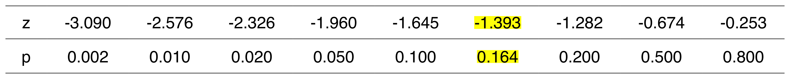
이 값을 표준정규분포곡선에서 확인하면 다음과 같다.
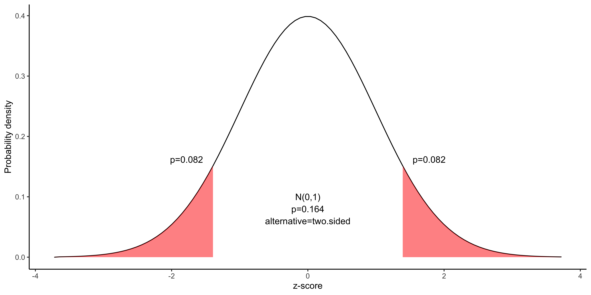양측검정이므로 p값은 0.164가 된다. 따라서 귀무가설 \(H_0\) 를 기각하기에는 근거가 부족하다.
HR의 95% 신뢰구간
회귀계수의 95% 신뢰구간 : 회귀계수 \(\pm 1.96\times\) 표준오차 로 정해진다. 설명변수 rx의 경우 회귀계수는 2.375, 회귀계수의 표준오차는 1.705이므로 회귀계수의 95% 신뢰구간은
2.37491 + c (- 1 ,1 )* 1.96 * 1.70547
HR의 95% 신뢰구간은 다음과 같이 계산된다.
exp (2.37491 + c (- 1 ,1 )* 1.96 * 1.70547 )
[1] 0.3799137 304.1835189
가능도비 검정
gaze (fit3) %>% myft () %>% highlight (i= 1 ,part= "footer" )
가능도비 검정은 설명변수가 하나도 없는 영 모형(Null model)의 로그가능도와 현재 모형의 로그가능도를 비교한 것이다.
영모형
= coxph (Surv (time,status)~ 1 ,data= anderson)
Call: coxph(formula = Surv(time, status) ~ 1, data = anderson)
Null model
log likelihood= -93.18427
n= 42
현재 모형의 로그가능도는 다음에서 알 수 있다.
가능도비검정에 쓰이는 LR 통계량은 영모형의 로그가능도에 -2를 곱한 값과 현재모형의 로그가능도에 -2를 곱한 값의 차이이다.
- 2 * (fit0$ loglik)- (- 2 * (fit3$ loglik[2 ]))
LR 통계량은 공변량의 갯수를 자유도로 하는 카이제곱분포를 따른다. 가능도비검정결과의 p값은 다음 R코드로 얻을 수 있다. 이 값은 R의 출력결과와 동일하다.
pchisq (47.07177 ,df= 3 ,lower.tail= FALSE )
모형의 비교: 상호작용을 포함할 것인가?
modelsSummaryTable (list (fit1,fit2,fit3)) %>% highlight (i= 9 ,j= 6 ,part= "all" )
Wald 검정
가능도비 검정
AIC(Akaike information criterion)
가능도비 검정
상호작용이 없는 두 번 째 모형과 가능도비검정을 하기 위해 LR 통계량을 구해보면 다음과 같다.
- 2 * (fit2$ loglik[2 ]- fit3$ loglik[2 ])
이 통계량은 두 모형의 공변량의 갯수의 차이를 자유도로 하는 카이제곱분포를 따르므로 p값은 다음과 같다.
pchisq (0.3594296 ,df= 1 ,lower.tail= FALSE )
이 값을 카이제곱분포곡선에서 확인해보면 다음과 같다.
draw_x2 (q= 0.3594296 ,df= 1 )
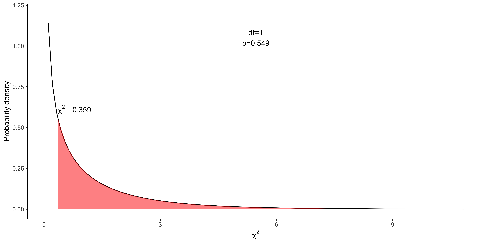가능도비 검정의 p값(0.549)은 Wald test의 p값(0.546)과 같지는 않지만 거의 비슷한 결과을 보여준다. 만약 두 검정 결과가 다르다면 가능도비 검정이 보다 좋은 통계학적 특성을 가지고 있기 때문에 가능도비 검정을 사용해야 한다.
AIC를 이용한 모형의 선택
\(AIC=2k-2log(\hat{L})\) 으로 계산되는데 \(k\) 는 공변량의 갯수이고 \(log(\hat{L})\) 는 로그가능도이다.모형 3의 AIC 값은
AIC 값은 낮을수록 좋은 모형이며 drop1()을 사용하면 현재모형과 설명변수를 하나 누락시킨 모형의 AIC 값을 비교해준다.
Single term deletions
Model:
Surv(time, status) ~ rx * logWBC
Df AIC
<none> 145.30
rx:logWBC 1 143.66
모형2와 모형 1의 비교
모형2와 모형 1을 가능도비검정으로 비교해보면 다음과 같다.
= - 2 * (fit1$ loglik[2 ]- fit2$ loglik[2 ])pchisq (LR,df= 1 ,lower.tail= FALSE )
모형2의 Wald 검정(p< 0.001) 및 가능도비검정(p< 0.001) 결과 모형2의 예측변수 logWBC 는 통계적으로 유의한 변수임을 알 수 있다.
따라서 세 가지 모형 중 모형 2가 가장 좋은 모형으로 결론내릴 수 있다.
모형 2의 rx에 대한 기술은 “logWBC의 효과를 보정한 후 치료효과는 통계적으로 유의하며 위험비는 4.0(95% 신뢰구간 1.74-9.20)으로 추정된다. ”라고 기술할 수 있다.
모형2의 위험비
modelPlot (fit2,widths= c (1 ,0 ,2.1 ,3 ))
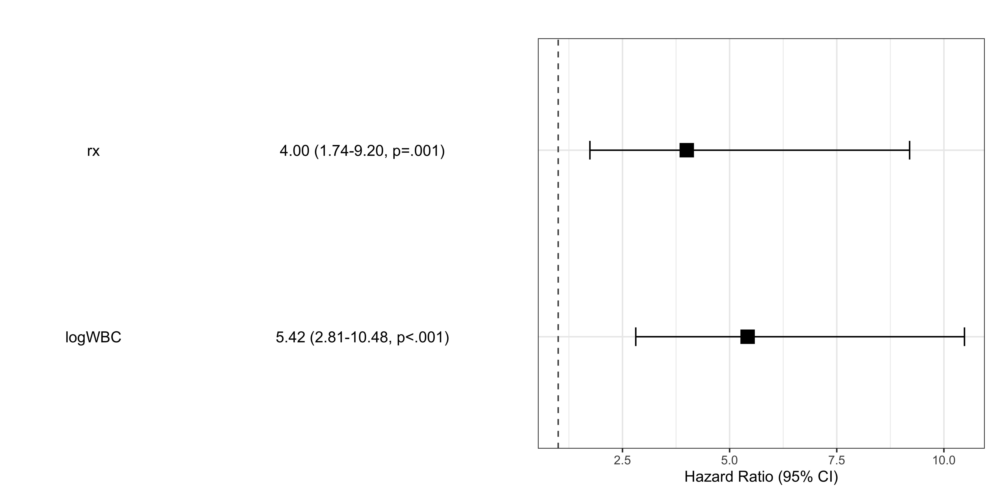
보정된 생존곡선
adjustedPlot (fit2,xnames= "rx" )
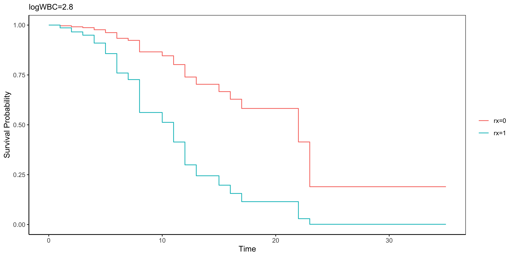
Baseline hazard
exponential
Involves \(t\)
Involves \(X\)
but not \(X\) ’s
not not \(t\)
\(X\) ’s are time-independent
\(X\) ’s involing t
time-dependent covariate
requires extended Cox model(no PH) (chapter 7)
Time-independent variables
Values for a given individual do not change over time
Sex, Smoking status : assumed not to change once measured
Age, Weight : do not change much or effect on survival depends on one measurement
기저위험함수
모든 공변량이 0일 경우 시간 \(t\) 에서의 위험함수는 \(h_0(t)\) 와 같아지며 이와 같은 특성 때문에 \(h_0(t)\) 를 기저위험함수 라 부른다.
\[\begin{align*}
h(t,\mathbf{X}) &= h_0(t) \times e^{\sum_{i=1}^{p} \beta_iX_i} \\
&= h_0(t) \times e^0 \longleftarrow X_1=X_2=...X_p=0 \\
&=h_0(t)
\end{align*}\]
또한 공변량이 없는 경우에도 시간 \(t\) 에서의 위험함수 \(h(t,X)=h_0(t)\) 가 된다.
Cox model: semiparametric
Why the Cox PH Model Is Popular ?
콕스PH모형의 강점(1)
Prefer parametric model if sure of correct model, e.g., use of goodness-of-fit test.
When in doubt, the Cox model is a safe choice
콕스PH모형의 강점(2)
콕스모형의 위험함수 식 중 지수부분인 \(e^{\sum_{i=1}^{p} \beta_iX_i}\) 에 강점이 있다.
이 지수부분의 값은 항상 0 보다 큰 값이 되기 때문에 위험비가 0부터 무한대의 값을 가질 수 있다(\(0 \leq h(t,X) \leq \infty\) ).
콕스PH모형에서 회귀계수의 추정
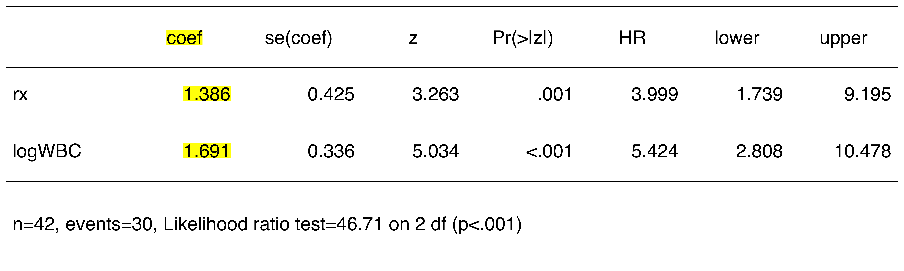
최대가능도(maximum likelihood) 추정량 : \(\hat{\beta}_i\)
이 모형에서의 위험함수는 다음과 같이 추정할 수 있다.
\[\hat{h}(t,X)=\hat{h}_0(t)\times e^{1.386rx+1.691logWBC}\]
최대가능도 추정량(ML estimates)
가능도함수(likelihood function)을 최대화하는 추정량
가능도함수는 보통 \(L(\beta)\) 로 표기하는데 모형에서 고려할 여러 설명변수들( \(\beta\) )의 함수라는 수학적인 표현이다.
\(L\) is a partial likelihood
콕스모형에서 사용하는 가능도함수는 부분 가능도함수(partial likelihood)함수
실패한 대상의 확률만을 고려한다
중도절단된 대상들의 확률은 명시적으로 고려하지 않는다
부분가능도 함수의 계산
\[L=L_1\times L_2\times L_3\times ... \times L_k = \prod_{j=1}^k L_j\]
부분가능도 함수는 \(k\) 개의 실패시간에 해당하는 여러 가능도들의 곱으로 쓸 수 있다.
\(L_f\)
“risk set” \(R(t_{(f)})\)
\(j\) 번째 실패시간까지 생존한 위험의 대상들시간이 진행할수록 그 숫자가 감소한다.
주어진 “risk set” \(R(t_{(f)})\) 에서 \(f\) 번째 실패시간의 가능도
그 시간까지 생존했다는 조건 하에 그 시간에 실패할 가능성을 나타내는 조건부 확률이다.
Steps for obtaining ML estimates
모형에서 가능도함수를 만든다.
가능도를 최대화하기 위해 컴퓨터를 사용하여 계산하는데 보통 로그가능도함수를 편미분한 방정식의 해를 구한다.
\[\frac{\partial log L}{\partial \beta_i} =0,\ \ \ i=1,2,3,...,p\ \ (p=no\ of\ parameters)\]
최대부분가능도추정량 \(\hat{\beta}\) 를 기반으로 누적위험함수를 구하기 위해 Breslow 추정량을 이용한다.
\[\hat{H_0}(t)=\sum_{t_i<t}\hat{h_0}(t)=\sum_{t_i<t}\frac{1}{\sum_{j \in R_j} e^{\beta x_i}}\]
이번 강의 끝 부분에 작은 데이터를 가지고 ML 추정량을 구해본다.
위험비의 계산
위험비는 어떤 대상의 위험을 다른 대상의 위험으로 나눈 값이며 이들 대상은 설명변수 \(X\) 가 다른 대상이다.
어떤 대상의 설명변수들을 \(X^*\) 라고 하고 다른 대상의 설명변수들을 \(X\) 라고 하면 위험비는 다음과 같이 나타낼 수 있다.
\[\hat{HR}=\frac{\hat{h}(t,X^*)}{\hat{h}(t,X)}\] - 위험비가 1 보다 작은 경우보다 1보다 큰 경우가 해석하기 쉽기 때문에 보통 위험이 큰 대상을 \(X^*\) (예: 대조군)로 하고 위험이 작은 대상을 \(X\) 로 한다(예: 치료군).
\[\hat{HR}=\frac{\hat{h}(t,X^*)}{\hat{h}(t,X)} =\frac{\hat{h_0}(t)\times e^{\sum_{i=1}^p \hat{\beta}X^*_i}}{\hat{h_0}(t)\times e^{\sum_{i=1}^p \hat{\beta}X_i}} = e^{\sum_{i=1}^p \hat{\beta_i}(X^*_i-X_i)}\] \[\hat{HR} =exp(\sum_{i=1}^p \hat{\beta_i}(X^*_i-X_i))\]
따라서 위험비의 계산에서 시간에 따라 변화하는 기저위험함수가 사라지고 설명변수와 회귀계수 부분만 남게 된다.
즉 위험비는 시간이 변하더라도 변하지 않고 일정하다.
따라서 콕스는 위험비를 “비례위험”이라고 하였다.
첫번째 모형: 하나의 설명변수
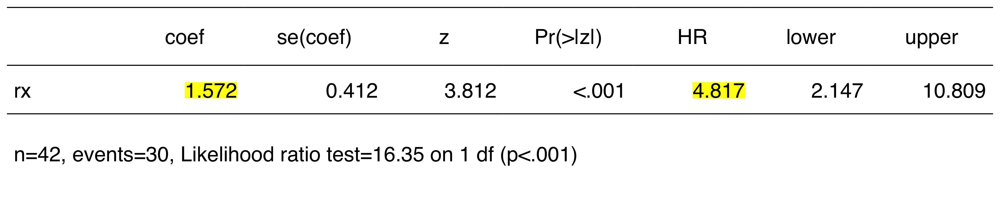설명변수가 하나(\(X_1\) )이고 0과 1로 표현할 수 있는 경우는 \(X^*_1=1\) 이 되고 \(X_1=0\) 이 된다.
\[\begin{align*}
\hat{HR}&=exp(\hat{\beta_1}(X_1^*-X_1)) \\
&=exp(\hat{\beta_1}(1-0))=e^{\hat{\beta_1}}= e^{1.572}=4.817
\end{align*}\]
두번째모형 : 두 개의 설명변수
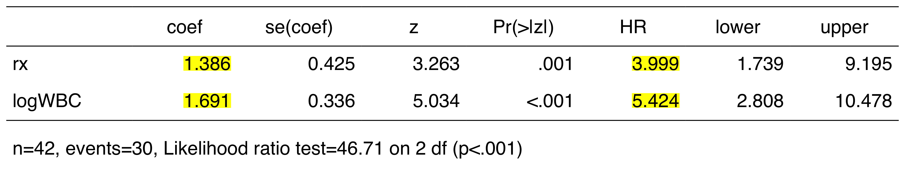\(X^*=(1,logWBC)\) 이고 \(X=(0,logWBC)\) 이다. logWBC가 같을 경우 대조군과 치료군의 위험비는 다음과 같다.
\[\begin{align*}
\hat{HR}&=exp(\hat{\beta_1}(X_1^*-X_1)+\hat{\beta_2}(X_2^*-X_2)) \\
&=exp(1.386(1-0)+1.691(logWBC-logWBC)) \\
&=e^{1.386(1)+1.691(0)}= e^{1.386}=3.999
\end{align*}\]
세번째 모형: 두 개의 설명변수와 상호작용
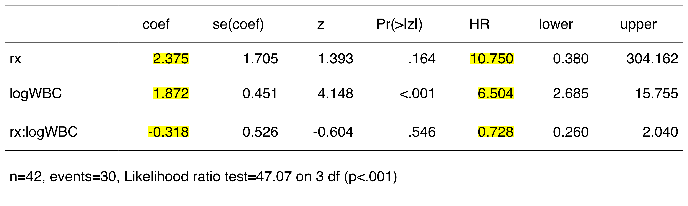\(X^*=(1,logWBC,1\times logWBC)\) 이고 \(X=(0,logWBC, 0 \times logWBC)\) 이다.
logWBC가 같을 경우 대조군과 치료군의 위험비는 다음과 같다.
\[\begin{align*}
\small
\hat{HR}&=exp(\sum_{i=0}^3 \hat{\beta_i}(X^*_i-X_i)) \\
&=exp(2.375(1-0)+1.873(logWBC-logWBC)\\
& \;\;\;\;\;\;\;\;\; -0.318(1\times logWBC -0 \times logWBC)) \\
&=exp(2.375(1)-0.318\times logWBC)
\end{align*}\]
대조군과 치료군의 logWBC가 2일 경우 위험비는 다음과 같이 계산된다.
\[\hat{HR}=exp(2.375(1)-0.318\times 2)=e^{1.739}=5.692\]
모형 1: rx에 따른 생존곡선: base R
= survfit (Surv (time,status)~ rx,data= anderson)plot (fit)
모형2: 보정된 생존곡선: base R
= coxph (Surv (time,status)~ rx+ logWBC,data= anderson)= c (0 ,1 )= median (anderson$ logWBC)= data.frame (rx,logWBC)plot (survfit (fit2,newdata= newdata),col= 1 : 2 ,lty= 1 : 2 )legend ("topright" ,legend= c ("treated" ,"control" ),col= 1 : 2 ,lty= 1 : 2 )
autoReg::adjustedPlot()
= coxph (Surv (time,status)~ rx+ logWBC,data= anderson)adjustedPlot (fit2,xnames= "rx" )
설명변수가 여러 개 있는 경우
data (cancer,package= "survival" )= coxph (Surv (time,status)~ rx+ strata (sex)+ age+ differ,data = colon)adjustedPlot (fit,xnames= c ("sex" ,"rx" ))
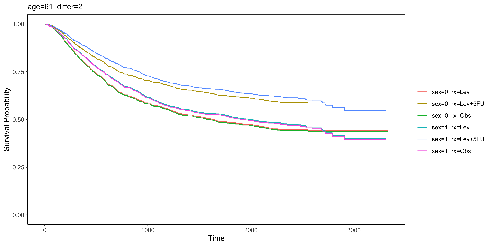
면분할
adjustedPlot (fit,xnames= c ("rx" ,"sex" ,"differ" ),facet= c ("sex" ,"rx" ))
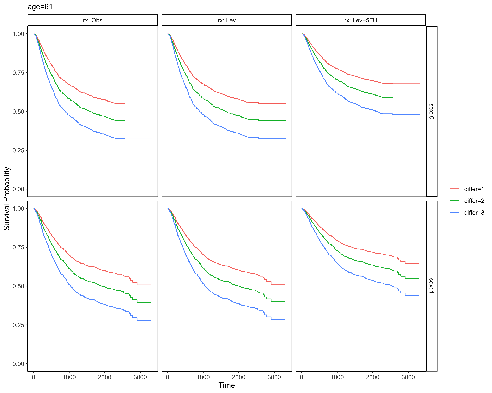
add 95% CI
adjustedPlot (fit,xnames= c ("rx" ,"sex" ,"differ" ),facet= c ("sex" ,"rx" ),se= TRUE )
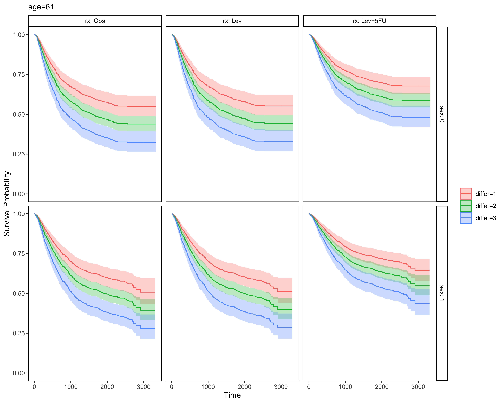
콕스가능도(The Cox likelihood)
가능도(Likelihood)
가능도함수는 결과변수의 분포에 의존한다
하지만 콕스모형은 결과변수인 실패할 때까지의 시간(time to event)에 대해 가정하지 않는다.
콕스가능도는 이벤트의 분포가 아닌 이벤트의 관찰된 순서에 의존한다: 부분가능도 라고 불린다.
예제1
영희, 철수, 영수 3명이 계를 들었다.
계를 타는 사람은 일정한 시간 간격(\(t_j, j=1,2,...\) )으로 뽑는다
한번 계를 탄 사람은 탈락되고 다시는 계를 탈 수 없다.
이때 영희가 먼저 계를 타고 그 후에 철수가 타고 제일 마지막으로 영수가 계를 탈 확률은?
\[Probability = \frac{1}{3} \times \frac{1}{2} \times \frac{1}{1}=\frac{1}{6}\]
예제2
사람마다 계를 탈 수 있는 딱지(표)가 있다.
영희는 4장, 철수는 한 장, 영수는 두 장의 표를 가지고 있다
표를 모두 모은 후 무작위로 한 장을 선택해서 표의 주인이 계를 타는데 한 번 계를 탄 사람은 다음에는 제외된다
이 경우 영희, 철수, 영수 순으로 계를 탈 확률은 어떻게 될까?
\[Probability = \frac{4}{7} \times \frac{1}{3} \times \frac{1}{1}=\frac{4}{21}\]
영희
2
1
1
철수
3
1
0
영수
5
0
0
기수
8
1
1
흡연을 설명변수로 하는 콕스비례위험모형을 생각해보자.
\[h(t)=h_0(t)e^{\beta_1Smoke}\]
영희
\(h_0(t)exp(\beta_1)\)
철수
\(h_0(t)exp(0)\)
영수
\(h_0(t)exp(0)\)
기수
\(h_0(t)exp(\beta_1)\)
첫번째 콕스가능도 \(L_1\)
2년째 영희에게 이벤트가 발생하였다
이 시기에 네명 모두 이벤트가 발생할 수 있는 위험대상이다.
첫번째 가능도(\(L_1\) )는 네 명의 위험도를 분모에 놓고 영희의 위험도를 분자에 놓으면 된다.
\[L_1=\frac{h_0(t)e^{\beta_1}}{h_0(t)e^{\beta_1}+h_0(t)e^0+h_0(t)e^0+h_0(t)e^{\beta_1}}\]
두번째 콕스가능도 \(L_2\)
철수는 3년째 이벤트가 발생하였다.
이때 위험대상은 철수,영수,기수 3명이다.
두번째 가능도(\(L_2\) )는 세 사람의 위험도의 합을 분모로 하고 철수의 위험도를 분자로 한다.
\[L_2=\frac{h_0(t)e^0}{h_0(t)e^0+h_0(t)e^0+h_0(t)e^{\beta_1}}\]
세번째 콕스가능도 \(L_3\)
다음 이벤트는 8년째 발생하였다.
영수는 5년째 중도절단되었으므로 8년째 위험대상은 기수 혼자이다.
따라서 \(L_3\) 은 다음과 같다.
\[L_3=\frac{h_0(t)e^{\beta_1}}{h_0(t)e^{\beta_1}}\]
콕스가능도
콕스가능도는 모든 가능도의 곱이며 기저위험함수인 \(h_0(t)\) 는 분자 분모에 모두 나타나므로 약분되어 생략하고 다음과 같이 나타낼 수 있다.
\[L=L_1\times L_2\times L_3\] \[L=[\frac{e^{\beta_1}}{e^{\beta_1}+e^0+e^0+e^{\beta_1}}]\times[\frac{e^0}{e^0+e^0+e^{\beta_1}}]\times[\frac{e^{\beta_1}}{e^{\beta_1}}]\]
콕스가능도의 특성
가장 중요한 특성은 기저위험함수가 각 식에서 약분되어 사라짐으로써 콕스모형을 만들 때 기저위험함수를 구체화할 필요가 없다는 점이다.
콕스가능도는 이벤트의 발생순서와 중도절단의 발생순서 에 의해 결정되며 분포 에 의존하지 않는다.
Data A
영희
2
1
1
철수
3
1
0
영수
5
0
0
기수
8
1
1
Data B
영희
1
1
1
철수
7
1
0
영수
8
0
0
기수
63
1
1
데이터 A와 데이터 B에서 시간이 다르지만 이벤트의 발생순서는 같다.
두 데이터에서 이벤트의 발생순서가 같기 때문에 콕스위험도는 동일하다.
콕스가능도의 일반화
데이터에 \(k\) 개의 실패시간이 있을 때 \(f\) 번째 실패시간의 가능도를 \(L_f\) 라고 하면 콕스가능도는 k개의 항의 곱으로 나타난다.
\[L=L_1\times L_2 \times L_3 \times ... \times L_k=\prod_{f=1}^k L_f\]
다음 단계는 콕스가능도 \(L\) 을 최대화하는 회귀계수의 값을 추정하는 것이다. 추정을 위해 콕스가능도의 자연로그를 편미분한 식을 0으로 만드는 해를 구한다.(스코어 함수와 정보행렬을 이용한다.)
\[\frac{\partial In L}{\partial \beta_i} =0,\ \ \ i=1,2,3,...,p\ \ (p=no\ of\ parameters)\]
회귀계수의 추정
위의 예에서 콕스 가능도는 다음과 같았다.
\[L=[\frac{e^{\beta_1}}{e^{\beta_1}+e^0+e^0+e^{\beta_1}}]\times[\frac{e^0}{e^0+e^0+e^{\beta_1}}]\times[\frac{e^{\beta_1}}{e^{\beta_1}}]\]
이를 정리해보면 다음과 같다. 여기서 설명변수가 하나이므로 \(\beta1\) 을 \(\beta\) 로 표기한다.
\[\begin{align*}
L(\beta)&=[\frac{e^\beta}{2e^\beta+2}]\times[\frac{1}{e^\beta+2}]\times 1 \\
&=\frac{e^\beta}{(2e^{\beta}+2)\times (e^{\beta}+2)}
\end{align*}\]
로그가능도
양변의 로그를 취하면 로그가능도함수를 얻는다.
\[\begin{align*}
l(\beta)&=log(\frac{e^\beta}{(2e^{\beta}+2)\times (e^{\beta}+2)}) \\
&=log(e^\beta)-log(2e^\beta+2)-log(e^\beta+2)
\end{align*}\]
로그가능도 함수 그래프
<- function (beta) {<- exp (beta)<- log (psi) - log (2 * psi + 2 ) - log (psi + 2 ) = seq (- 2 ,2 ,length.out= 100 )plot (pl (beta) ~ beta, type= "l" , xlab= "beta" , ylab= "log partial likelihood" ,cex.axis= 1.5 , cex.lab= 1.5 , lwd= 2 , col= "black" )
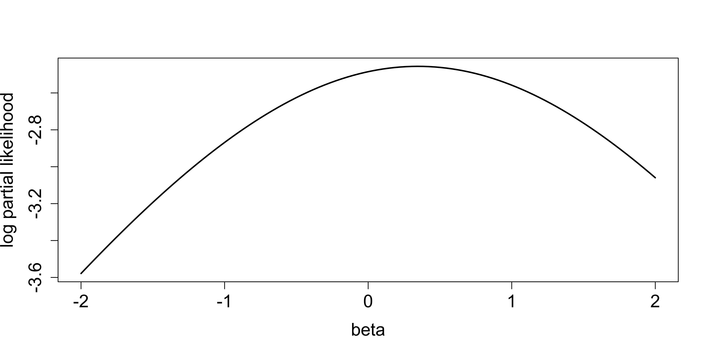
회귀계수 추정
로그가능도함수의 값이 최대가 되는 \(\beta\) 의 값이 회귀계수의 추정치이다.
최대부분가능도 추정치(maximum partial likelyhood estimate)는 R의 optim함수로 얻을 수 있다.
= optim (par= 0 , fn = pl, method = "L-BFGS-B" ,control= list (fnscale = - 1 ), lower = - 3 , upper = 1 )$ par
스코어 함수
로그가능도함수를 미분한 함수가 스코어 함수이다.
스코어함수 값은 로그가능도함수 그래프의 기울기가 된다.
\[\begin{align*}
U(\beta)&=l'(\beta)=(log(e^\beta)-log(2e^\beta+2)-log(e^\beta+2))'\\
&=\frac{e^\beta}{e^\beta}-\frac{2e^\beta}{2e^\beta+2}-\frac{e^\beta}{e^\beta+2}\\
&=1-\frac{2e^\beta}{2e^\beta+2}-\frac{e^\beta}{e^\beta+2}
\end{align*}\]
스코어 함수 그래프
= function (beta){ <- exp (beta)= 1-2 * psi/ (2 * psi+ 2 )- psi/ (psi+ 2 )plot (scoref (beta) ~ beta, type= "l" , xlab= "beta" , ylab= "score function" ,cex.axis= 1.5 , cex.lab= 1.5 , lwd= 2 , col= "black" )
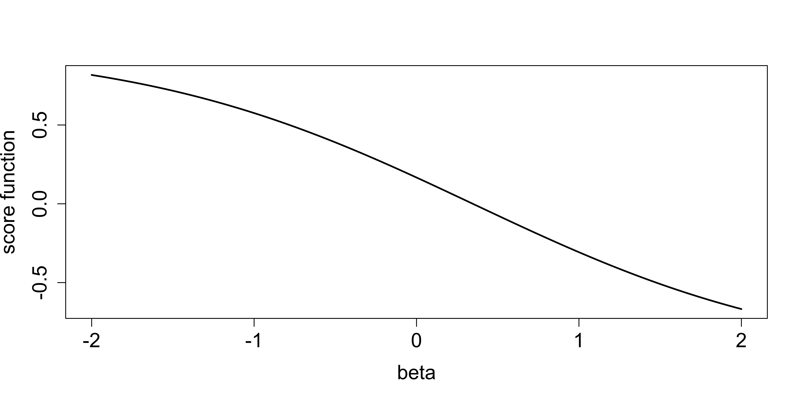
스코어 함수 -> 회귀계수
스코어함수의 값이 0이 되는 \(\beta\) 의 값과 같다. 이 값은 uniroot함수로 구할 수 있다.
<- uniroot (f = scoref, interval= c (- 5 ,5 ),tol = .Machine$ double.eps)$ root
콕스모형에서 회귀계수
= coxph (Surv (time,status)~ smoke)$ coef
스코어함수 값
귀무가설인 \(\beta=0\) 에 해당하는 로그부분가능도 함수의 값은 -2.485이다. 점 (0,-2.485)에서 로그부분가능도 함수의 곡선에 접선을 그리면 그 접선의 기울기는 스코어 함수의 값이 된다.
스코어함수 값
이 값은 흥미롭게도 로그순위검정의 U 통계량과 같다. 즉, 다음의 로그순위검정에서 관찰값-기대값의 합계와 같다.
library (howto)= survfit (Surv (time,status)~ smoke)howto2 (fit,digits= 3 ) %>% fontsize (size= 15 ,part= "all" )%>% plot ()
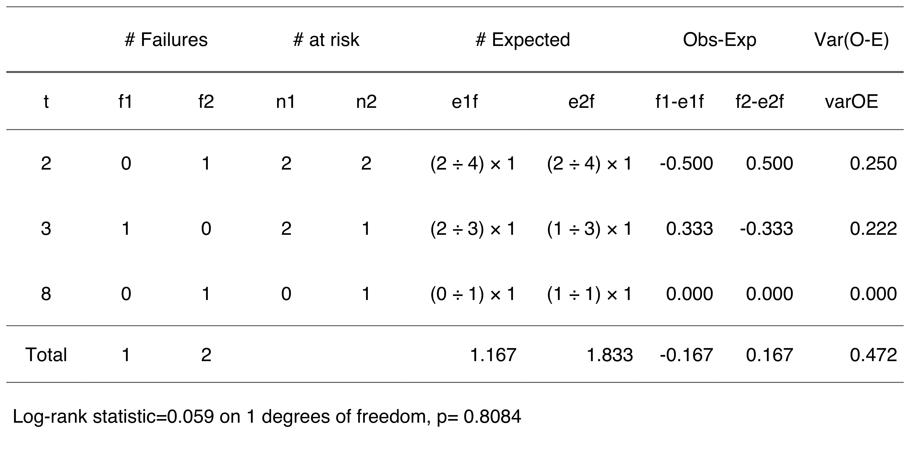
로그가능도 함수곡선의 접선
다음 함수는 로그가능도 함수곡선의 임의의 \(\beta\) 값에서 접선을 그려준다.
= function (x,col= "black" ){y= pl (x))points (x,y,col= col,pch= 19 )slope= scoref (x))= y- slope* xabline (a= intercept,b= slope,col= col)
이 함수을 이용해 로그부분가능도함수 곡선 및 최대로그부분가능도, \(\beta=0\) 일 때의 접선을 그려보면 다음과 같다.
plot (pl (beta) ~ beta, type= "l" , xlab= "beta" , ylab= "log partial likelihood" ,cex.axis= 1.5 , cex.lab= 1.5 , lwd= 2 , col= "black" )abline (v= result1$ root, lty= 2 )abline (v= 0 , lty= 2 ,col= "red" )add_tangent (0 ,col= "red" )add_tangent (result1$ root)
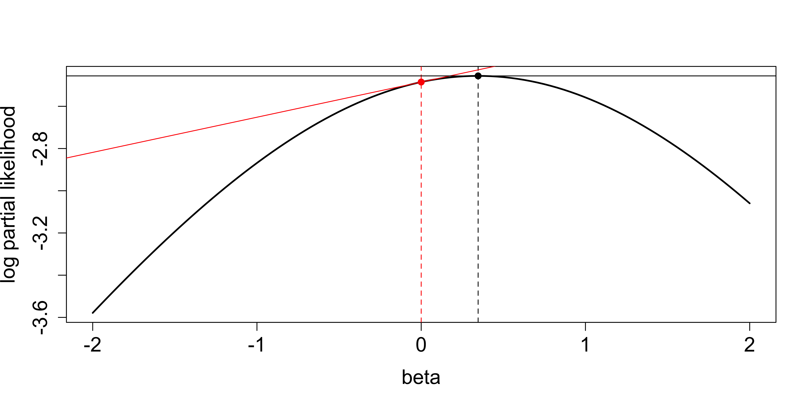
여러 개의 공변량이 있을 때 콕스부분가능도
식을 간단히 하기 위해 \(i\) 번째 공변량 \(z_i\) 의 회귀계수를 \(\beta\) 라고 헀을 때 \(\psi=e^{z_i\beta}\) 로 정의한다. 부분가능도는 각 실패시간(1부터 \(j\) )의 가능도의 곱으로 계산되며 \(j\) 번째 실패시간 \(t_j\) 의 가능도는 위험대상 \(R_j\) 의 모든 위험을 분모로 하고 위험대상 \(R_j\) 중 실패를 경험한 대상의 위험이 된다. \(D\) 는 위험대상 중 사망한 수를 나타낸다.
\[L(\beta)=\prod_{j=1}^D\frac{h_0(t_j)\psi_j}{\sum_{k \in R_j}h_0(t_j)\psi_k}=\prod_{j=1}^D\frac{\psi_j}{\sum_{k \in R_j}\psi_k}\]
로그콕스부분가능도, 스코어함수
위의 콕스부분가능도 함수의 로그를 취하면 로그콕스부분가능도가 된다.
\[l(\beta)=\sum_{j=1}^D[log(\psi_j)-log(\sum_{k \in R_j}\psi_k)]=\sum_{j=1}^D z_j\beta-\sum_{j=1}^{D} log(\sum_{k \in R_j}e^{z_k\beta})\]
스코어 함수는 로그콕스부분가능도 \(l(\beta)\) 를 미분한 것으로 공변량의 갯수가 \(j\) 개인 경우 \(j\) 개로 구성된다. 스코어함수의 l번째 구성성분은 다음과 같다.
\[S_l(\beta)=\frac{\partial l(\beta)}{\partial \beta_l}=\sum_{j=1}^{D}[z_{jl}-\frac{\sum_{k \in Rj}z_{jk}e^{z_j\beta}}{\sum_{k \in Rj}e^{z_j\beta}}]\]
위의 식에서 \(log(\psi_j)=z_j\beta\) 이고 \(z_{jl}=\partial log(\psi_j)/\partial\beta_l\) 이다.
정보행렬
k개의 공변량들의 모든 가능한 조합을 갖는 로그부분가능도를 두 번 미분하면 정보행렬(information matrix)을 얻을 수 있다.
\[I(\beta;z)=-\frac{\partial^2l(\beta)}{\partial \beta \partial \beta'}=-\frac{\partial S(\beta)}{\partial \beta}\]
위의 정보행렬은 헤시안 행렬(Hessian matrix)이라고도 알려져 있다.
왈드통계량(\(X^2_w\) ), 스코어통계량(\(X^2_s\) ), 로그가능도검정통계량(\(X^2_l\) )
귀무가설 \(H_0:\beta=0\) 에 대한 왈드통계량(\(X^2_w\) ), 스코어통계량(\(X^2_s\) ), 로그가능도검정통계량(\(X^2_l\) )은 다음과 같다.
\[X^2_w=\hat{\beta}'I(\hat{\beta};z)\hat{\beta}\] \[X^2_s=S'(\beta=0;z) \times I^{-1}(\beta=0;z)\times S(\beta;z)\] \[X^2_l=2\{l(\beta=\hat\beta )-l(\beta=0)\}\]
세 개의 통계량은 모두 공변량의 갯수를 자유도를 갖는 카이제곱분포를 따른다.
콕스모형 summary
R에서 콕스모형에 적합시킨 후 모형을 summary()로 확인할 경우 세 개의 통계량을 모두 볼 수 있다.
library (autoReg)summary (coxph (Surv (time,status)~ rx+ logWBC,data= anderson))
Call:
coxph(formula = Surv(time, status) ~ rx + logWBC, data = anderson)
n= 42, number of events= 30
coef exp(coef) se(coef) z Pr(>|z|)
rx 1.3861 3.9991 0.4248 3.263 0.0011 **
logWBC 1.6909 5.4243 0.3359 5.034 4.8e-07 ***
---
Signif. codes: 0 '***' 0.001 '**' 0.01 '*' 0.05 '.' 0.1 ' ' 1
exp(coef) exp(-coef) lower .95 upper .95
rx 3.999 0.2501 1.739 9.195
logWBC 5.424 0.1844 2.808 10.478
Concordance= 0.852 (se = 0.04 )
Likelihood ratio test= 46.71 on 2 df, p=7e-11
Wald test = 33.6 on 2 df, p=5e-08
Score (logrank) test = 46.07 on 2 df, p=1e-10